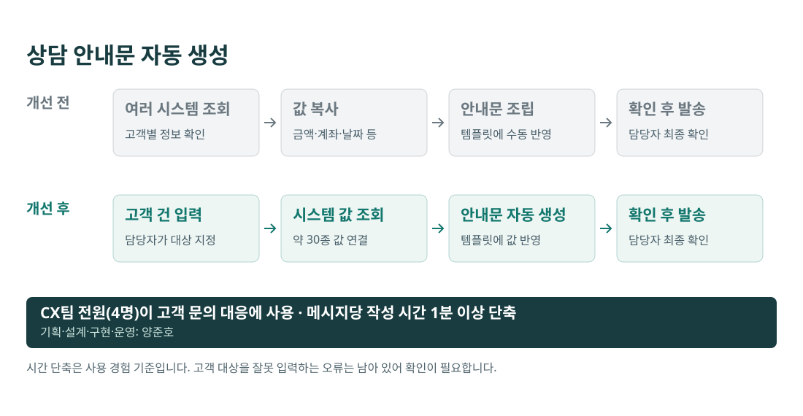
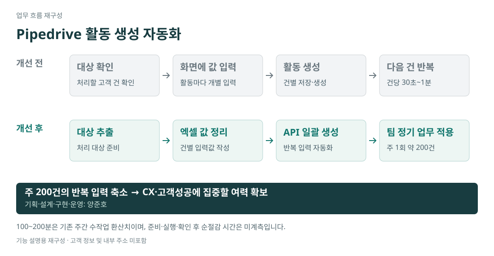

초기 기획·설계·구현·운영 · CX팀 전원(4명) 사용
문제 발견
CX 인력 부족으로 지원 업무를 온보딩받고 직접 상담하면서, 정형화된 문구에 고객별 일자·금액·신청 정보를 반복해서 붙여넣는 작업을 발견했습니다. 템플릿은 있었지만 시스템 값을 찾아 옮기는 과정은 수작업이었습니다.
설계 판단
문의 인식부터 자동 답변 발송까지 구상했으나, 고객 대상과 문의 맥락에 맞는 안내인지 사람이 확인할 수 있도록 범위를 정했습니다. 시스템 값 조회·변수 치환은 자동화하고, 대상 입력·검증·발송은 담당자가 수행하도록 구성했습니다.

적용과 정착
직접 시범 사용하면서 복사·입력 시간이 줄어 같은 시간에 처리할 수 있는 상담 건수가 늘어나는 것을 확인했습니다. 이후 팀원들의 사용을 독려하고 피드백을 반영해 웹 계산기와 시스템 필드 입력 기능 등으로 확장했습니다.
CX팀 전원(4명)이 고객 문의 대응에 사용. 메시지당 작성 시간 1분 이상 단축(사용 경험 기준). 개인의 시간당 처리량 증가율은 별도로 계측하지 않았습니다.
고객 대상을 잘못 입력하는 오류는 남아 있어 담당자 확인이 필요합니다.
Pipedrive · Excel · API / 기획·구현·팀 적용
문제와 판단
활동 한 건을 생성하는 데 30초~1분이 필요했습니다. 팀에서 매주 약 200건을 처리하므로 입력 반복이 고객 대응 시간을 차지했습니다. 고객 건마다 달라지는 값은 한 번에 준비하고, 반복 생성은 API가 처리하도록 구분했습니다.

직접 수행한 범위
- 대상 추출과 엑셀 값 준비 이후 API로 활동을 일괄 생성하는 방식 기획·구현.
- 팀의 주 1회 약 200건 처리 업무에 적용. 대상과 입력값 준비는 사람이 담당하고 반복 생성을 자동화.
반복 입력 부담을 줄여 팀원들이 고객 경험과 고객성공 업무에 집중할 여력을 확보했습니다. 다른 불편도 개선할 수 있는지 고민하며 기획·자문을 요청하는 행동에서도 개선의 정착을 확인했습니다.
200건 × 30~60초 = 기존 주간 수작업 100~200분. 준비·실행·확인 시간을 제외한 순절감 시간은 미계측입니다.
활성 사용자 251명 · 90일 활동 로그 · 2026.08
문제와 판단
최고관리자 22명이 가진 권한을 정비하면서 실제 업무에 필요한 접근을 유지해야 했습니다. 직함만으로 일괄 회수하기보다 권한 현황과 사용 기록으로 필요한 역할을 판단하고, 필요한 권한을 먼저 부여한 뒤 기존 권한을 회수하는 순서를 정했습니다.
실행과 안전장치
- 기능 69개·역할 64개로 권한을 분해하고 90일 활동 로그를 분석해 역할 정비 근거 마련.
- 권한 부여 API가 기존 배열을 교체하는 동작을 확인하고, 기존 권한과의 합집합 부여 및 스냅샷 백업으로 대응.
- 관리자 부여 기준과 직무별 표준 권한 세트, 과다·중복 요청 확인 기준을 정리.
활성 사용자 251명의 권한 현황과 사용 로그를 기준으로 역할을 정비하고, 최고관리자를 22명에서 3명으로 축소했습니다.
운영으로 남긴 기준
권한 요청을 개인의 기억에 의존하지 않고 기준에 대조해 판단하도록 정리했습니다. 자동 선택을 지원하는 도구에서도 최종 저장은 사람이 수행하도록 설계했습니다.
연락 방식별 결제율 비교 · 위탁 범위와 내부 업무 배분
분석 기준
결제 안내 이후의 응대 이력과 결제 데이터를 연동해, 결제 금액 구간과 연락 방식에 따른 결제율을 비교했습니다. 저액 구간에서는 기본 안내에 문자와 전화 안내를 추가한 고객군의 결제율이 더 높은 것을 확인했습니다.
운영에 반영한 결정
이를 근거로 저액 구간은 외부 위탁 콜센터에 배정하고, 내부 결제 담당자는 고액 고객 대응에 집중하도록 업무를 조정했습니다.
직접 수행한 범위
응대 이력과 결제 데이터를 연결하고, 고객군별 연락 방식에 따른 결과를 분석해 위탁 대상과 내부 담당자의 집중 범위를 정하는 의사결정에 활용했습니다.
데이터 조회에서 끝내지 않고, 분석 결과를 고객군별 후속 안내와 인력 배분 방식으로 연결했습니다.
연락 방식별 관측 차이를 근거로 한 결정이며, 위탁 이후의 결제율 개선 효과를 별도로 검증한 결과는 아닙니다.